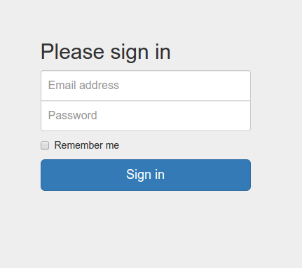

Bootstrap merupakan front-end framework untuk HTML, JS dan CSS yang sangat populer. Bootstrap menyediakan berbagai ‘bungkus’ (wrap-up) dari HTML, JS dan CSS untuk memudahkan penyusunan halaman web yang kompleks tanpa banyak kesulitan.
Bootstrap juga dikenal sebagai framework yang dapat digunakan untuk membuat halaman web yang responsif. Dengan kata lain, pembuat web (developer) tidak perlu membuat beberapa alamat yang berbeda agar website anda dapat dimuat pada sebuah perangkat mobile atau browser yang berbeda. Anda cukup membuat satu halaman, dan Bootstrap akan mengatur layout halaman web anda secara otomatis.
Untuk pemula, Anda dapat menggunakan Bootstrap dengan dua cara yang mudah:
Untuk memanggil Bootstrap dari CDN anda dapat melakukannya sebagai berikut:
<!-- Latest compiled and minified CSS -->
<link rel="stylesheet" href="https://maxcdn.bootstrapcdn.com/bootstrap/3.3.1/css/bootstrap.min.css">
<!-- Optional theme -->
<link rel="stylesheet" href="https://maxcdn.bootstrapcdn.com/bootstrap/3.3.1/css/bootstrap-theme.min.css">
<!-- Latest compiled and minified JavaScript -->
<script src="https://maxcdn.bootstrapcdn.com/bootstrap/3.3.1/js/bootstrap.min.js"></script>
Setelah memanggil Bootstrap, anda dapat menggunakan komponen yang tersedia untuk membuat website anda.
Note
Ada dua versi Bootsrap yang dapat anda gunakan: Versi penuh dan versi minified. Versi mini memiliki lebih sedikit fungsi dan komponen dibandingkan versi penuh, namun umumnya sudah mencukupi untuk berbagai keperluan pembuatan halaman web anda.
Kita akan menggunakan repository yang telah anda buat pada bab sebelumnya
(repository username.github.io milik anda).
latihan-bootstrap.html, kemudian copykan kode berikut:1 2 3 4 5 6 7 8 9 10 11 12 13 14 15 16 17 18 19 20 21 22 23 24 25 26 27 28 29 30 31 32 33 34 35 36 37 38 39 40 41 42 43 44 45 46 47 48 49 50 51 52 53 54 55 56 57 58 59 60 61 62 63 64 | <!DOCTYPE html>
<html>
<head>
<title>Bootstrap Example</title>
<!-- Include meta tag to ensure proper rendering and touch zooming -->
<meta name="viewport" content="width=device-width, initial-scale=1">
<!-- Include bootstrap stylesheets -->
<link rel="stylesheet" href="http://maxcdn.bootstrapcdn.com/bootstrap/3.2.0/css/bootstrap.min.css">
</head>
<body>
<div class="container">
<h2>Table</h2>
<p>Create a responsive table (will scroll horizontally on small devices under 768px). In addition: add alternating cell background color:</p>
<div class="table-responsive">
<table class="table table-striped table-bordered">
<thead>
<tr>
<th>#</th>
<th>Name</th>
<th>Street</th>
</tr>
</thead>
<tbody>
<tr>
<td>1</td>
<td>Anna Awesome</td>
<td>Broome Street</td>
</tr>
<tr>
<td>2</td>
<td>Debbie Dallas</td>
<td>Houston Street</td>
</tr>
<tr>
<td>3</td>
<td>John Doe</td>
<td>Madison Street</td>
</tr>
</tbody>
</table>
</div>
<h2>Image</h2>
<p>Create a responsive image (will scale to the parent element). In addition: shape the image to a circle:</p>
<img src="cinqueterre.jpg" class="img-responsive img-circle" alt="Cinque Terre" width="304" height="236">
<h2>Glyphicons</h2>
<p>Insert icons:</p>
<p>Cloud icon: <span class="glyphicon glyphicon-cloud"></span></p>
<p>Envelope icon: <span class="glyphicon glyphicon-envelope"></span></p>
<p>Search icon: <span class="glyphicon glyphicon-search"></span></p>
<p>Print icon: <span class="glyphicon glyphicon-print"></span></p>
<p>Download icon: <span class="glyphicon glyphicon-download"></span></p>
</div>
<!-- JavaScript placed at the end of the document so the pages load faster -->
<!-- Optional: Include the jQuery library -->
<script src="https://ajax.googleapis.com/ajax/libs/jquery/1.11.1/jquery.min.js"></script>
<!-- Optional: Incorporate the Bootstrap JavaScript plugins -->
<script src="http://maxcdn.bootstrapcdn.com/bootstrap/3.2.0/js/bootstrap.min.js"></script>
</body>
</html>
|
Git Push untuk menyimpan perubahan yang telah anda lakukan pada repository anda iniWarning
Sebagai peringatan, anda harus terlebih dahulu melakukan git pull, git add --all dan git commit sebelum melakukan push. Jika tidak, Github akan gagal melacak file yang anda buat pada repository lokal anda tersebut.
http:://username.github.io/latihan-bootstrap.htmlBootstrap menyediakan berbagai komponen yang dapat anda gunakan. Anda dapat bereksperimen sendiri dengan mengacu pada http://getbootstrap.com/components/.
Sebagai latihan, buatlah sebuah form registrasi yang meminta masukan nama dan alamat email dengan menggunakan Bootstrap seperti di atas.